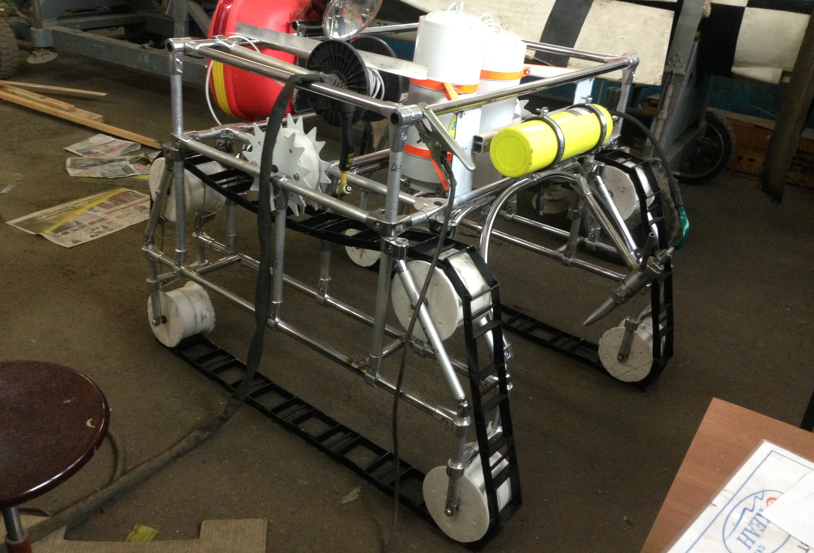
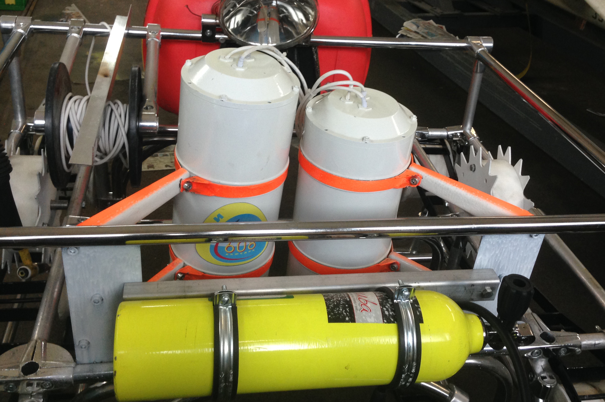
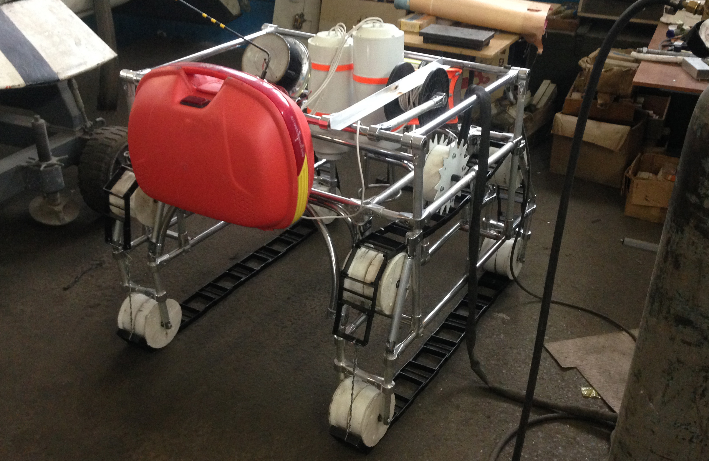

Многофункциональный подводный носитель водолазного оборудования состоит из двух модулей – подводного (носителя) и надводного (буя).
Носитель представляет собой самоходное шасси на гусеничном ходу, корпус которого представляет собой ферменную конструкцию.
Такое решение позволяет максимально использовать шасси для размещения различного водолазного оборудования без использования вспомогательного инструмента и применения монтажно- демонтажных работ.
Конструкция шасси позволяет размещаться «над объектом», что позволяет использовать носитель для обследования протяженных объектов (трубопроводы, кабели, и т.д.), а также проводить поисково-спасательные операции.
В базовом варианте носитель оснащается двумя герметичными боксами для размещения исследовательского оборудования и датчиков. В качестве двигателя используется электромотор, конструктивно выполненный в виде мотор-колеса с зубчатым венцом, который входит в зацепление с гусеницей.
Для управления движением носителя на борту размещён блок управления (БУ) с преобразователем сигналов (ПС). На внешней стороне находится «корзина для крепления надводного буя в транспортировочном положении, а в центральной части корпуса над центром тяжести установлена катушка с силовым кабелем и тяговым тросом.
Надводный буй представляет собой прочный кофр, имеющий положительную плавучесть не менее 15 кг. Внутри кофра расположены приемо-передающее (теле-, радио-) устройства для связи с оператором на берегу, запоминающее устройство для записи рабочей информации, а также эластичная ёмкость. Надводный модуль связан с носителем силовым кабелем, который выдерживает усилие на «разрыв» до 1 т.
В различных вариантах на буе может располагаться либо автономный источник питания, либо преобразователь электроэнергии, подаваемой с берега для обеспечения энергией носителя. Одной из функций надводного модуля является возможность «переноса» носителя при наличии непреодолимого носителем препятствия, за счет создания дополнительной плавучести.
| Габариты: длина / ширина / высота (м) | 1,2 × 1,2 × 1,0 |
| Масса, кг | 24 |
| Скорость перемещения (обследования), м/мин | 1÷3 (в зависимости от внешних условий и вида обследования) |
| Рабочая глубина, м | 15 |
| Предельная глубина, м | 30 |
| Обслуживающий персонал, чел. | 3 |
| Вид связи с оператором | теле-, радиокабель |
| Вид носимого оборудования | любое оборудование для обследования, эксплуатируемое водолазами |